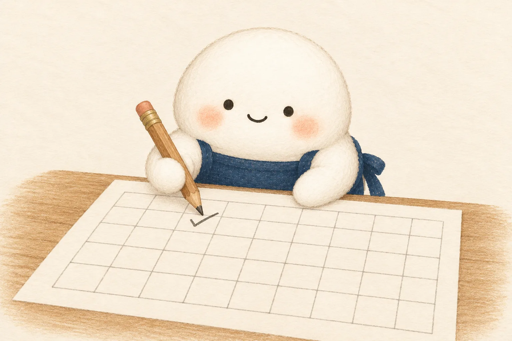

年賀状づくりでいちばん時間がかかるのは、実は書く前の「今年はだれに出すか」を決めるところです。去年の束を1枚ずつめくらなくても済むように、やりとりを1か所に残しておく方法を紹介します。
まず「出す人」を決めてから、はがきを買う
はがきを先に買うと、足りなくなったり、余ったりしがちです。出す人の一覧を先に作り、人数が決まってから、書き損じの分を少し足して買うと、むだがありません。
一覧を作るときに迷うのが、「去年は出したけれど、向こうから来なかった人」や「何年も前から来なくなった人」です。毎年その場で思い出そうとすると時間がかかるので、やりとりの記録を年ごとに残しておくと、判断が早くなります。
残しておきたいこと
1人1行にして、次のことを書いておきます。
- 名前と住所…住所が変わったら、その年の行で書き直す
- 出した…その年にこちらから出したか
- 届いた…その年に相手から届いたか
- 喪中…喪中のお知らせをいただいた年
- メモ…「子どもが生まれた」「引っ越した」など、近況のひとこと
「出した」「届いた」を年ごとに○で残すと、何年もやりとりが続いている人と、こちらからだけ出している人が、並べて見られます。どこまで続けるかは人それぞれなので、記録を見ながら自分で決めれば十分です。
喪中のお知らせは、届いた日に書く
喪中のお知らせは、一般に11月から12月のはじめごろに届くことが多いものです。届いたその日に、その人の行の「喪中」に印をつけておきます。年賀状を書くころにまとめて思い出そうとすると、うっかり出してしまうことがあります。
喪中の方には、年賀状のかわりに、松の内が明けてから寒中見舞いを出す人もいます。出すかどうか、いつ出すかは地域や相手との間柄によっても違うので、迷ったら家族や身近な人に聞いてみてください。
届いた年賀状は、その日のうちに○をつける
お正月に年賀状が届いたら、その日のうちに「届いた」に○をつけます。出していない人から届いたときは、その人の行を足して、返事を出したら「出した」にも○をつけます。こうしておくと、翌年の一覧づくりはほとんど終わっています。
年賀状の束そのものは、1年分だけ取っておき、記録が済んだら古いものから整理する、という家もあります。住所や近況は記録の側に残っているので、束をすべて取っておかなくても困りません。
個人の情報を書くので、しまい方に気をつける
名前や住所を書くので、ファイルやノートのしまい方には気をつけます。ファイルにパスワードをかける、共有のパソコンに置かない、紙なら決まった引き出しにしまう、など、ご家庭に合った方法で守ってください。
よくある質問
年賀状をやめたい人には、どうすればいいですか？
やめ方に決まりはありません。最後の年賀状に「今年で年賀状を終わりにします」とひとこと添える人もいれば、何も書かずに少しずつ減らす人もいます。記録の「メモ」に、いつやめたかを書いておくと、翌年また迷わずに済みます。
はがきは何枚くらい余分に買えばいいですか？
決まった数はありませんが、書き損じや、出していない人から届いたときの返事の分を考えて、数枚多めにしておくと安心です。前の年に返事を何枚出したかを記録しておくと、次の年の目安になります。
まとめ
年賀状は、出した・届いた・喪中を年ごとに残しておくと、「今年だれに出すか」がすぐに決まります。喪中のお知らせは届いた日に、年賀状は届いたその日に○をつけるのがこつです。年末年始のほかの用事に使えるひな形は、年末年始に使える Excel ひな形のページにまとめています。
出典・確認日
この記事は、一般的な考え方や手順をまとめたものです。法律・制度や公的機関の数字は使っていません（確認日：2026-11-03）。今後の制度変更などで目安が変わることがあります。最新の情報は、お住まいの市区町村や各機関のホームページでご確認ください。